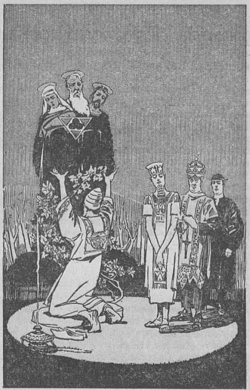
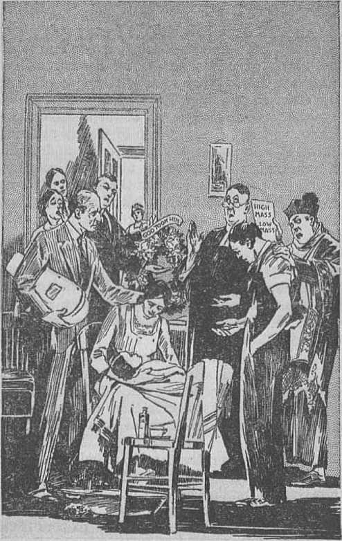
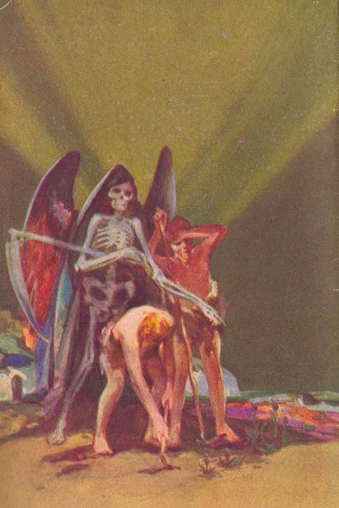

explained in
Seven Bible Treatises
fay .
J. F. RUTHERFORD
Page
3 Man
10 The Trinity Unveiled
20 Presumptuous Sins
28 Sheep and Goats
37 Permission of Evil
45 Hypocrisy
55 Jerusalem, Ancient and Modern
Step by step, from Genesis’ “Thou shalt surely die” to Revelation’s "There shall be no more death”. Judge Rutherford, through his books, traces the majestic purposes of Almighty God.
----------------------------------------s.
CorrRTcnTED 1932 AND PUBLISHED BY
WATCH TOWER BIBLE AND TRACT SOCIETY International Bible Students Association Brooklyn, N. Y., U.S.A.
Branch Offices: London, Magdeburg, Paris, Toronto, Strathfleld, Capo Town, Berne, Copenhagen, Stockholm, and other eitles.
Made in U.S.A.
JETTOVAH and his purpose should he man’s chicfest study. The truth thereof is found in the Bible. One of the first things for man to learn is Ins own relationship to God, the great Creator. The Bible states that God made man in his own image and likeness. That image and likeness could not have reference to the body, because God is the great Spirit, while man is of the earth. The Bible states that there is a spirit body and there is a human body, and that no man knows the form of a spirit body.
What is meant by man’s being made in the image and likeness of God? The attributes of Jehovah God are justice, wisdom, love and power, all operating equally and in exact balance. The beasts of the field do not possess these attributes. The imperfect man we now see possesses a degree of justice, wisdom, love and power. The fact that these qualities are now incomplete in the imperfect man shows that the perfect man had these attributes in completeness, because it is written in the Bible that the first man was made a perfect creature.
Jehovah God has dominion over all the universe. In a similar manner the perfect man was 3 given the dominion over all other animal creation of the earth. Therein was a likeness to his Creator. Man is the only earthly creature made in the likeness of God. It is an insult to the intelligence of man and a blasphemy of God’s holy name to contend that man evolved from an ape. God’s Word, which is the truth, states, in Genesis 2:7: ‘'The Lord God formed man of the dust of the ground, and breathed into his nostrils the breath of life; and man became a living soul.”
The statement is often made that God created man and then gave to man a soul. That statement is contrary to the Scriptures and false. The word soul means a creature that lives, moves and breathes. Long before the creation of man animals of the lower order were created, and in Genesis 1:20, margin, these are called 'souls’. God formed the body of man from the elements of the earth and then breathed into the nostrils of that body the breath that all animal creatures breathe, and the man became a living, moving creature, which is a soul. Every man is a soul. No man possesses a soul separate and distinct from his body.
It is claimed by many that the soul of man is immortal and continues to live forever. That claim is wholly false. Immortality means that which cannot die. The fact that men have been dying for many centuries proves the falsity of the immortality of souls. In 1 Timothy 6:16 it is stated that originally God only had immortality. The perfect man Jesus when on earth was not immortal, because he said that one of God’s promises to him was that he would give him immortality as a reward for his faithfulness. It is recorded, in the second chapter of Philippians, that at the resurrection of Jesus God highly exalted him and rewarded him with immortality. Thereafter Jesus said: "I am he that . . . was dead; and, behold, I am alive for evermore.”
God said to Adam the first man: Tn the day that you sin you shall surely die.’ If man had possessed an immortal soul that statement could not be true, and we know that God’s Word is true. Adam did violate God’s law, and died, which is complete proof that he was not immortal. The breath which God breathed into the nostrils of man is not immortal. Both the body and the breath of life are required to constitute a living creature or soul, and when the breath is taken away death immediately results. All right to life proceeds from God. The breath does not possess life. It is the breath that keeps the blood in circulation by which the body is animated and life sustained. In Deuteronomy 12: 23 it is written: "The blood is the life.” All animals, including man, have blood and must breathe in order to live. Take away the blood or the breath and death results. That which dies is not immortal, but mortal. Every man is a soul, and when he dies it is the soul that dies. It is written, in Ezekiel 18:4: “The soul that sinneth, it shall die.” The life of man and his right to life depend upon his obedience to God’s law. If man possessed an immortal soul, then God could not enforce the penalty of his own law.
God created the earth many centuries before the creation of man. The earth was provided as the everlasting home of perfect man. Concerning this it is written, in Isaiah, chapter 45: “Thus saith the Lord, ... I have made the earth, and created man upon it; . . . God himself . . . formed the earth, and made it; he hath established it, he created it not in vain, lie formed it to bo inhabited.”
God’s purpose is to have in due time the earth filled with a perfect and happy race. This great truth man will appreciate when he learns why the human race is now imperfect and suffers much and when he learns of God’s purpose and means provided to restore the obedient ones of mankind to perfection and make the earth a paradise home for man.
A portion of the earth called Eden was in the beginning the paradise home of Adam and his perfect wife Eve, whom God had given him. It was a place of glory and beauty and contained everything for the ease, comfort and happiness of man. Adam and Eve lost that beautiful home, and were driven out of it and caused to earn their food by hard labor until they were dead. Such was the result of a rebellion against Jehovah God in which they willingly joined. The judgment against them was just and righteous. God could not have been true to himself had he not sentenced man to death. His wisdom and loving-kindness, however, immediately made provision for the redemption, deliverance and restoration of the obedient ones of mankind.
The right to life is a gift to those who obey God’s law. Jehovah had made man the crowning part of his earthly creation. He had given him life and the right to life, and in consideration thereof required of man full obedience to his law. A willful disobedience of that law in the slightest manner would show a wrong motive on the part of man, and a tendency to disloyalty. God did not lay a great and hard thing upon man, but he plainly told him that there was a certain fruit in- Eden of which he must not eat and that a violation of this order would result in taking away from man his life and the right thereto. To be sure, God could have made man so that he could not disobey; but had he done so that would have taken away from man the opportunity of freely exercising his own will. God tells his creatures what they may or may not do and lets them decide which course they wish to take and then bear the consequences.
God had created man out of the dust or elements of the earth, and his judgment written in the Bible is that man should die and return to the dust from which he was taken. That judgment was in strict accordance with his law, and it took away from man the right to life, even though God permitted him to continue to live during the greater portion of a thousand-year day. To enforce his judgment he expelled man from Eden, and man, being compelled thereafter to feed upon the food produced by the unfinished earth, sickened and in due time died.
Between the time of expulsion from Edon and his death Adam and his wife brought forth children. The parents having no right to live, the children were therefore born without the right to live. For this reason it is written, in Bomans 5:12: “Wherefore, as by one man sin entered into the world, and death by sin; and so death passed upon all men, for that all have sinned.” Any creature that is imperfect is unable to keep the law of God, and therefore is by nature a sinner. All human creatures are born imperfect.
Unless God should make some provision for the recovery of the human race, in time all mankind would perish. At the very tune of the expulsion of man from Eden God announced in cryptic phrase not then understood, but which can now be understood, the purpose to establish a government of righteousness which would prove his word to be true and would completely vindicate his action and his name, and which would furnish the means for the complete recovery and reconciliation of the human race to himself. Nothing could be of greater importance to man than a knowledge of these truths.
All sorrow and suffering and death that has befallen the human race has been due to sin. What is sin ? The Scriptural answer is that “sin is the transgression of [God’s] law”. The great sin is disloyalty to God. The first act of disloyalty to the Most High was the rebellion by Satan and which rebellion led to the downfall of man. It marks the beginning of man’s su fferings and of all the, trouble that has come upon the world. Satan has ever been the enemy of man and of God. On another occasion the Scriptural proof will be considered as to the origin of Satan the Devil, his wicked works, and what shall be his end.
Man’s everlasting friend is Jehovah God. A true friend is one who loves you all the time. God has always manifested his love for his creature man. When man receives an understanding of God’s provision for his recovery he desires to worship the great Eternal One. The enemy Satan has kept men in ignorance of the truth, but now God’s due time has come to let man see the truth. Those who understand and obey the truth will thereby prove that they are wise; hence it is written in his Word (Proverbs 3:13-18): “Happy is the man that findeth wisdom, and the man that getteth understanding: for the merchandise of it is better than the merchandise of silver, and the gain thereof than fine gold. She is more precious than rubies.”
Briefly summed up, the Bible proves beyond all doubt that God created the first man perfect, and from that man all the human race sprang; that the wrongdoing of the first man brought ■ the penalty of death upon him; that thereafter his children were born, and hence they were born imperfect and sinners; that God in his loving-kindness has made provision for the redemption and deliverance of man, and this he will accomplish by and through his beloved Son, earth’s rightful King; and that the time for the establishment of his kingdom is now at hand. It follows that God’s time has therefore come for man to learn the truth. Men should be wise and acquire a knowledge of God's Word that they may learn the way to everlasting life and endless happiness.
■ • ■ ■
WHAT THE CLERGY call the "holy trinity” is a doctrine taught by them which they do not understand and which they cannot explain and which is wholly unreasonable and inconsistent with the Bible. The doctrine had its origin with Satan the "Devil. It was a prominent doctrine in the religions of the ancient Babylonians and Egyptians and of other ancient mythologists, all of which are Devil religions. It was first introduced into the so-called “Christian church” in the fourth century by a Greek clergyman. The doctrine is that there are three gods in one, the Father, the Son, and the Holy Ghost, all equal in power, substance and eternity. No man has ever been able to give a satisfactory definition of this riddle called “the trinity”, because there is no reason to it. To aid the gullible in keeping the mind fixed upon it an image was introduced by its advocates, composed of a triangle, a circle and a trefoil. That served as a kind of hoodoo by which people made themselves believe in the trinity. If you ask any clergyman to explain the trinity as to how it possibly exists, his answer is: "That is a mystery.”
As a help to the student in understanding why this false doctrine has been taught to the people, keep in mind always this one indisputable fact, to wit: Satan, the enemy of God, has ever tried to turn the people away from a knowledge of the true God. The so-called "trinity” is one of his tricks by which he deceives many. Satan, therefore, induced men to bring forth that unreasonable doctrine which attempts to show that Jehovah God, Christ Jesus, and the Holy Ghost are three, and yet one. Ambi-
Worship of the trinity -
Page 11
tious men desired to appear wise and to thereby be able to hold control over the ignorant people, and hence they fell easy marks to the wiles of the Devil. The matter is summed up in Bomans 1: 21-25, in these words: "When they knew God, they glorified him not as God, neither were thankful; but became vain in their imaginations, and their foolish heart was darkened: professing themselves to be wise, they became fools, . . . changed the truth of God into a lie, and worshipped and served the. creature more than the Creator.”
The facts well known are that the name of 'Jesus has been made more prominent by the clergy than that of Jehovah God. Even Mary, who gave birth to the babe Jesus, is worshiped, and the "Holy Ghost” is held up as an object of worship.
The clergy say that God is one, Jesus is one, and the "Holy Ghost” is one, and the three added together make one. That is a kind of mathematics that can never be explained satisfactorily by anyone.
The truth is reasonable and consistent. The truth, as set forth in the Bible, shows that there is one God, who is the great First Cause, and that Christ Jesus is his Son and the beginning of his creation; and that the "holy ghost” is not a person at all. You should take the Bible and from it prove these facts to your satisfaction, and then no longer be misled by men.
In Isaiah 45: 5 Jehovah says: *1 am the Lord [Jehovah], that is my name; there is no God besides me.’ The Scriptures further show that the name "God” identifies him as the great First Cause and the Creator of all things; that "Almighty God” reveals him as the One having power without limitation; that his name "Jehovah” reveals him as the One without beginning and without end and makes known his purposes toward his creatures; and his name "Most High” reveals him as supreme above all; Jehovah God is not a creature, but he is the Creator.
Jesus is a creature and the beginning of God’s creation, as the Scriptures repeatedly state. His original name was Logos, or Word of God, because he was God’s spokesman and active agent. The Scriptures record the Logos saying, in Proverbs 8:22 (A.7?.F.): "Jehovah possessed me in the beginning of his way.” Such proves that the two are not one. The Son was the active agent of Jehovah in the creation of all things. When God sent him to earth he was called Jesus, because that signifies that he would save the people.
In John 1:14 it is written that the Logos was made a man or human creature and dwelt amongst men. In Ephesians 3:9 the statement is recorded that Jehovah God created all things by Jesus Christ; and these scriptures make the clear distinction between the Father and the Son.
Surely sober-minded and thoughtful persons would prefer to accept the testimony of Jesus Christ as the truth, even though such shows that the clergymen are false witnesses. Let the Scriptures he relied on for the truth, because Jesus said they are the truth. These are some of the statements of Jesus which I quote from the Scriptures. In John, the fifth chapter, he said: “I seek not mine own will, but the will of the Father which hath sent me. . . . The works which the Father hath given me to finish, the same, works . . . I do. . . . The Father himself, which hath sent me, hath borne witness of me,”
In John 12: 49 he says: “For I have not spo* ken of myself; but the Father which sent me, he gave me a commandment, what I should say, and what I should speak.” When he stood at the grave of Lazarus he prayed these words: '‘Father, I thank thee that thou hast heard me.” If the Father and the Son were one and the same, then it would appear to be foolish for the Lord to pray to himself. Thdse statements show they are not one person.
In Psalm 40:8 Jesus is recorded as saying: "I delight to do thy will, O my God; yea, thy law is [written] within my heart.” This plain statement shows the Father to be greater than the Son and that the Son was and is subject to Jehovah; and that disproves the so-called "trinity”. In John 14: 28 this conclusion is sustained by the words of Jesus, who said: "I go unto the Father: for my Father is greatei’ than I.” When instructing his followers to pray he said (Matthew 6) : ‘In this manner always pray: Our Father, which art in heaven. . . . Thy kingdom come.’ In Luke 22 : 29, he said to his disciples: ‘Aly Father has made a covenant with me to give me the kingdom.’ Surely God would not make a covenant with himself for his own kingdom.
In 1 Timothy 6:16 the statement is made that Jehovah God originally and only possessed immortality. In John 5: 26, Jesus stated that God had promised him immortality at his resurrection. In Philippians 2:9-11 the proof is set forth that God did raise Jesus up out of death and gave him immortality, which he did not possess prior thereto; and this further disproves the trinity doctrine.
On an occasion Jesus said to his disciples: "I and my Father are one.” This is seized upon by the clergy to prove the trinity. Had they examined the context, as well as other words of Jesus, they would have seen differently. In John, chapter 17, Jesus explained the moaning of those words. He said in his prayer to God: ‘I pray for those which shall believe on me, that they may be one as thou, Father, art in me, and I in thee, that they may also be one in us, even as we are one.’ That oneness the Scriptures explain in this manner: As a man and wife are one, because he is the head, even so Jesus Christ is the Head over the church which is his body, and God is the Head over all; so that all are of one grand and blessed organization, over which Jehovah is supreme.
The word “ghost” in the Bible is from the Greek word which should properly be translated “spirit” and is so translated in the Revised Version. It is not a person or creature, but is the power of God which operates according to his will. As a power plant sends forth the electric current that operates machinery, likewise the power of Jehovah, which is his spirit, goes forth and operates his universe according to his will.
The doctrine of the trinity not only is false, but in effect denies the great ransom sacrifice of Jesus Christ, “Hansom” means to give an exact corresponding price. Since the death of Jesus provided the ransom for man, he who died must be perfect and equal to Adam. It is stated, in Hebrews 2: 9, that Jesus was made a man that he might die for the benefit of all. According to the clergy God himself had to die for man. That would have been impossible, and, if it were, possible, would have given a price far greater than was required to ransom man. Jesus was dead for three days and, if the trinitarians are right, then the universe was without any God for that period of time. The theory of the trinity is false and is used by Satan to confuse men and turn them away from the truth of the Bible.
Briefly, the Scriptures state that Jehovah is the only God; that his creature man sinned and was sentenced to death; that no man was able to redeem his brother from death; that God in his loving-kindness sent to earth his Son, the Logos, whose life was transferred from spirit to human; that he died as a man and as a substitute for the sinner, and that God raised up Jesus out of death; that God will now establish his kingdom with Christ Jesus as the Head thereof, and that through that kingdom all the families of the earth shall have the opportunity to receive the blessings of life. The Scriptures furthermore show that Christ must reign until he has destroyed all enemies, which includes the Devil himself. To be sure, the Devil would do everything possible to confuse the people and prevent them from learning these truths, and he has brought forth the “trinity” for that very purpose.
The fact that the trinity has been taught by men for centuries adds nothing to its value. The time has now come when the people must learn the truth, because the kingdom of heaven is at hand. Now the people must choose for themselves as to what they will believe. If you want to learn God’s truth you must take your Bible, and not the unsupported statements of imperfect men. In Ephesians it is written that God’s purpose is to gather together all things unto Christ and to make him ruler over all, subject only to Jehovah God, and that there is one Lord Jesus Christ, and one God, the Father of all, who is above all. A knowledge of God and his beloved Son, as set forth in the Bible, means that one has learned the way to life. That knowledge is of first importance to every one.
Jehovah is the only true God. The Logos, who afterwards became Jesus, was, when he was on earth, a man. He was raised from the dead a divine creature and is the great King whom God has placed upon his throne. In this kingdom not only will these errors be destroyed by being taken away from the people, but all imperfections will be removed from, the human race and the obedient ones of mankind will know the truth and follow the truth, and, doing so, will be restored to perfection of mind and body and give praise to Jehovah God, who is worthy of all praise. The last book of the Bible is called Revelation. It is that “Revelation of Jesus Christ, which God gave unto him, to shew unto his servants”. Surely Jesus did not give himself that Revelation. As further proof that the trinity doctrine is false, at the very beginning of Revelation Jesus said: “I am he that liveth, and was dead; and, behold, I am alive for evermore.” Tins is proof that Jesus is not God, because Jehovah never died. He is from everlasting to everlasting.
JEHOVAH is the great God of the universe. The Bible is his Word and it is the truth, and concerning it Jesus said: "Thy word is truth.” God caused his will concerning men to be expressed in the Bible, which was written under his direction by devout men. The Christian confidently relies upon the Bible testimony as conclusive upon all questions relating to the proper course of man. In Psalm 19:13 it is written: “Keep back thy servant also from presumptuous sins; let them not have dominion over me; then shall I be upright, and I shall be innocent from the great transgression.” These words constitute a prayer of the persons who sincerely desire to be guided in the right way, and it follows that such are in danger of committing presumptuous sins; hence the necessity for watching their course of action.
Sin is the transgression of God’s law written in his Word. Presumption means to arrogantly overstep the proper bounds. It means a rash attempt to do that which one is not authorized to do. For men to rashly attempt to do in the name of God that which they are not authorized to do is clearly a presumptuous sin. One who assumes the authority to speak or act in the name of God and in a manner contrary to his expressed Word is guilty of presumption. The
"great transgression” means the act of openly joining or aligning oneself with the Devil and his organization. It is such things that the true Christian sincerely desires to avoid, and he asks the help of God that he may avoid such acts of wrongdoing.
In order that a better understanding may be had of what constitutes presumptuous sin a few illustrations are here given. At the close of the World War the League of Nations compact was brought forth by the political leaders of the world. The announced purpose was and is to outlaw war and to establish lasting peace amongst the nations and to make the earth a fit place in which to live. Immediately thereafter the Federal Council of Churches in America,, which claims to serve God and to speak for him and his Christ, issued a bold and arrogant statement to the effect that the League of Nations is the political expression of God’s kingdom on earth; that is to say, that the nations of earth, banded together in a league, have assumed to establish peace on earth in the name of God and of his Christ. That statement was and.is a gross presumptuous sin. It is a transgression of the expressed law of God and wrongfully assumes authority to do that which God alone can and will do. The Scriptural proof is now submitted in support of that statement.
Since the time of the tragedy in Eden no nation has been organized by divine authority, except the nation of Israel. By his prophet Amos, in chapter three, verse two, God so stated. That nation God used to make types foreshadowing his purposes concerning the peoples of the earth. Because of the unfaithfulness of that nation God cast them away from his favor, and at the same time stated, through his prophet Ezekiel (21:24-27), that until the coming of Christ Jesus no one should have a right to rule, and then it should be given to him and he would set up his kingdom.
AH of the nations of the earth have been organized by men who desire to have some form of government, but none of them have been created or organized by the authority of Jehovah God. Nations and. world powers have existed from the days of ancient Babylon until and including the nations now on the earth, but none of these have been organized by authority from Jehovah. Not one of these nations has ever recognized or even claimed Jehovah as its only true God. Satan, who was man’s original overlord, rebelled against God and turned his organization against Jehovah. God could have, deprived him of his power then, but his perfect wisdom caused him to do otherwise. He has permitted Satan to pursue his wicked course until due time to destroy his organization. For centuries Satan has been, and now is, the invisible ruler of all of the nations of the world. This Scriptural proof is set forth in John, the twelfth and fourteenth chapters, and in 2 Corinthians, the fourth chapter.
Satan is God’s enemy. He mocks and reproaches God and, hypocritically, through his agents, assumes to do things in the name of God for the purpose of causing men to become disgusted with and to turn away from Jehovah God. There are more than fifty nations associated in the League, not one of which ever claims that Jehovah is its God, These nations are ruled by selfish and imperfect men, and crime and unrighteousness predominate in all of them. If they were a part of God’s organization such wicked things could not exist, because God is wholly righteous.
No one will dispute the fact that the Federal Council of Churches is a part of this world, takes part in the politics of the world, and receives support from the great financial giants of the. world. Therefore not only is it friendly with the world, but it forms a part of the world. In James 4:4 it is written: “Know ye not that the friendship of the world is enmity with God? whosoever therefore will be a friend of the. world, is the enemy of God.” The reason is that the world, or organization of nations, constitutes Satan's organization, of which he, the Devil, is the head or god. There can be no harmony or harmonious action between God’s government and Satan’s organisation.
The greatest truth set forth in the Bible is that of and concerning God’s kingdom under Christ. The declaration of God is that such kingdom will completely put to rout and destroy Satan’s rule, establish righteousness in the earth, and completely vindicate the name and word of Jehovah God. Therefore, for any company of men, forming a part of the world and being of the worldly organization, to boldly claim the ability and purpose to establish lasting peace on earth in the name of the Lord, shows that such are proud and arrogant and acting contrary to God’s expressed will and are therefore guilty of presumptuous sin.
Jehovah God has appointed Christ Jesus as the world’s rightful King who shall rule in righteousness. Jesus taught his followers to pray: “Thy kingdom come. Thy will be done in earth, as it is in heaven”; but he did not teach them to attempt to set up God’s kingdom. Is it not the duty of a Christian, you may ask, to attempt to reform the world and make the world a safe place for Christ to come and visit? No, such is not the commission of the Christian, The followers of Christ are taken out from the world and made separate therefrom and commissioned to be witnesses to the purpose of Jehovah God. Such must live righteously and must point out to the people that the only way that life and happiness can be had is by the means God has provided, and that in due time he will set up his kingdom which will bring these desired blessings to the people.
The nations composing “organized Christianity”, so called, have taken the lead in setting up the League of Nations, and the clergy thereof are the ones that have made the claim that ‘the League is the expression of God’s kingdom on earth’. Such a thing was never attempted before. And why attempted now? The answer is found in the Scriptures, and is this: Christ has come and God has placed him upon his throne of authority, as stated in Psalm 2:6; Satan has been cast out of heaven and, knowing that his time is short before the great and final conflict, now employs every possible means to turn the people away from God and his purposes. We are therefore now in the last days, and in harmony therewith the prophecy of the Bible sets forth that the agents of Satan have become bold, arrogant and presumptuous. Concerning this it is written, in 2 Timothy, chapter three: “This know also, that in the last days perilous times shall come. For men shall be lovers of their own selves, . . . boasters, proud, blasphemers, . . . unthankful, unholy, . . . traitors, heady, highminded, lovers of pleasures more than lovers of God; having a form of godliness, but denying the power thereof.”
The world is full of evil today, and this includes the rulers that set up and support the League of Nations and who arrogantly claim that they will cleanse the world. Jehovah will not use these arrogant ones to represent him in his kingdom, but, on the contrary, he says, in Isaiah 13:11: “I will punish the world for their evil, and the wicked for their iniquity; and I will cause the arrogancy of the proud to cease, and will lay low the haughtiness of the terrible.”
Lasting peace can never be brought to the earth by the League of Nations, because of it the Lord says, in Isaiah, the eighth chapter: ‘Take counsel together, and it shall not stand? And again saith the Lord, in 1 Thessalonians, chapter 5: ‘‘When they shall [all] say, Peace and safety; then sudden destruction comoth upon them.” It is when these nations combine together, arrogantly assume to represent God, and mockingly claim to set up Ids kingdom, that the words of God’s prophet in Daniel 2:44 apply to them, to wit: “And in the days of these kings shall the God of heaven set up a kingdom which shall never be destroyed: and the kingdom shall not be left to other people, but it shall break in pieces and consume all those kingdoms, and it shall stand for ever.” This is a positive statement that neither the League of Nations nor any combination of men shall have anything to do with God’s kingdom under Christ. Any company of men or organization claiming thus to represent God’s kingdom is guilty of presumptuous sin and blasphemy, because such brings reproach upon the name of Jehovah.
The kingdom of God under Christ is at hand, and the present duty of all who love righteousness is to make this fact known to their fellow men, that they may take their stand on the side of the Lord and be in readiness to receive the blessings of the kingdom. For this reason a small company of men and women are now going from house to house calling the attention of the people to such books as Deliverance, lieconciliation and Light, which fully explain these great and important questions and enable the people to find in their Bibles the truth concerning them. The complete relief of the people can come only through the administration of God’s kingdom under Christ. Therefore let the people inform themselves quickly of what they may do in order to receive the blessings the Lord has in store for them.
God’s purpose and promise to establish his kingdom under Christ is absolutely certain to he accomplished. There is no power that can prevent it. Furthermore, it is the sole remedy for the ills of the sons of men. The kingdom of God is not a myth, but is a living reality. No one can truly claim that there is peace and righteousness amongst the nations that form the League. How different it will be in God’s Idngdom. By his prophet, in Psalm eighty-five, concerning his kingdom under Christ it is written: 'Jehovah will speak peace unto the people. Truth shall spring out of the earth; and right* eousness shall look down from heaven. Yea, the Lord shall give that which is good; and our land shall yield her increase. Righteousness shall go before him, and shall set us in the way of his steps.’ Let the people learn of Jehovah and obey him and there will follow lasting peace and prosperity.
AMONG THE PROPHECIES of the Bible there is one concerning the sheep and the goats, and it is recorded in Matthew the twenty-fifth chapter. It is stated in the form of a parable, which serves to conceal its moaning until the time of fulfilment. Many have attempted to toll the meaning of this prophecy but have failed because no prophecy is of private interpretation. In his due time Jehovah causes events to come to pass in fulfilment of prophecy. These events we call the physical facts; and when we can see before us the physical facts that exactly fit the prophecy we may be sure that such constitute its fulfilment and that we have the proper understanding thereof.
The very language of this prophecy shows that it must have fulfilment at the time when some of the followers of Christ Jesus are on the earth, because the Lord pronounced judgment against others who have done or failed to do things to his brethren on the earth. That alone shows that its fulfilment must take place, before the time of the restoration of the human race during the millennial reign of Christ. I suggest that immediately following this speech you read from your Bible Matthew 25: 31-46.
The chief part of this prophecy began to have fulfilment in 1918 because that is the time, as shown by the Scriptures, when Christ Jesus begins judgment at his temple. The words “all nations” mentioned in the prophecy refer to the nations that constitute so-called “Christendom”, and the Scriptures declare that judgment must begin with the house of God and must include those who claim to be followers of Christ. The prophecy shows the people divided into two classes; one the Lord likened unto goats, and the other he describes under the symbol of sheep. The word goat is symbolically used to represent that class of people in so-called "Christendom” who call themselves Christians, in contradistinction to heathen, but wTho do not look for the reign of Christ and the restitution blessings of the people by him. Sheep symbolically are used to represent those people who mentally accept Christ and who have a desire to see his reign and the blessings it will bring. These two animals fitly represent the two classes of people now on the earth. A goat is haughty, austere and proud, and has the inclination to butt into affairs that are not his own. There are many leaders in the church denominations who exhibit the characteristics of the goat. The goats are therefore used to represent certain clergymen and the principal ones of their flock.
A sheep is a meek and submissive animal and voluntarily does injury to no one. Sheep, therefore, fitly represent the class of people of “Christendom” who are of good will, who are submissive and inoffensive, and who like to do good, especially to anyone who they believe is honestly serving God and Christ. Some such are in the denominational churches, and many like ones are outside of all denominations.
During the World War many of the clergymen in the countries of “Christendom” caused the arrest and imprisonment of humble Christians because they were telling the people that the great war was in fulfilment of prophecy relating to the kingdom of God. Many others were arrested because they had in possession Bibles, song books and books explaining the Bible. There were other Christians who found no spiritual food and drink in the churches because their leaders and teachers were indulging in politics and talking of anything except the Bible. The clergymen of the congregations properly claim to be the shepherds of such flocks. God by his prophet, in Ezekiel, chapter 34, foretold this class and conditions in the church at
the end of the world, in these words: “Woe be unto the shepherds that feed themselves and do not feed the flock. The diseased have ye not strengthened; neither have ye healed the sick, hut with force and cruelty have ye ruled them.’
During the past few years men and women have been going from house to house, carrying to the people the message of God’s kingdom under Christ, which they have done in obedience to the commandments of the Lord and because of their love for him. Frequently some of these are abused and ill-treated by certain clergymen who then cause their arrest and imprisonment on the charge of working on Sunday or as peddlers. These conditions are described merely to show a fulfilment of the prophecy. This prophetic parable shows that the goats represent a class of professed Christians who ill-use real Christians, because the latter are preaching the truth. The Lord caused his judgment concerning such to be written and pronounced in these words, as appears in verses 41-45, Matthew, twenty-fifth chapter: “Then shall he say also unto them on the left hand, Depart from me, ye cursed, into everlasting fire, prepared for the devil and his angels: for I was an hungred, and ye gave me no meat; I was thirsty, and ye gave me no drink: I was a stranger, and ye took me not in; naked, and ye clothed me not; sick, and in prison, and ye visited me not. Then shall they also answer him, saying, Lord, when saw we thee an hungred, or athirst, or a stranger, or naked, or sick, or in prison, and did not minister unto thee? Then shall he answer them, saying, Verily I say unto you, Inasmuch as ye did it not to one of the least of these, ye did it not to me.”
Jesus is the Chief One amongst all of God’s anointed. All those who are true followers of Christ and who are God’s anointed are counted as members of the body of Christ. Of these Jesus speaks as though they were himself in person. Whatsoever is said or done for or against one of these true followers of Christ Jesus is as though it were said or done to Jesus Christ himself. This projfhetic parable is further proof of that fact.
Addressing himself to that class represented by the sheep, Jesus says, in Matthew 25: 35, 3G: “For I was an hungred, and ye gave me moat; I was thirsty, and ye gave me drink; I was a stranger, and ye took me in; naked, and ye clothed me; I was sick, and ye visited me; I was in prison, and ye came unto me.” The sheep class are represented as saying with surprise to the.Lord: ‘But Lord, when did we do these things for which you commend us?’ The Lord replies to them: ‘Inasmuch as you have done it to the least of my brethren you have done it unto me.’
During the past ten years events have come to pass in exact fulfilment of this part of the prophecy. A pioneer witness is one who goes about with books explaining the Bible and giving testimony to the people concerning God and his kingdom. Many times one of these pioneer witnesses calls at the home to tell the members thereof concerning the goodness of God and his kingdom under Christ and to exhibit to such books that fully explain the matter. His words of kindness fall upon sympathetic ears. The hearer sees that the pioneer witness is trying to serve the Lord, and responds like this: “I know you must be sent of the Lord and what you say must be true. I should love to have those books and to learn how to study my Bible, but you see we are very poor. We have been without work for months, and therefore we cannot have the books. But I see you are very tired, and the day is so warm; won't you please come in and sit awhile and have a glass of cool water ? That is all I have to offer you.”
Such kind words and good deeds are. prompted by the fact that it is believed that the witness is trying to do good in the name of the Lord. That the Lord is pleased with those who treat with kindness his servants, and therefore likens them unto sheep, is shown by his words in Mark 9:41: "Whosoever shall give you a cup of water to drink in my name, because ye belong to Christ, verily I say unto you, he shall not lose his reward.” The Lord takes note of the least kindness shown to one of his own.
Calling at another home the pioneer witness, after telling of the purpose of his visit, is addressed by the member of the family like this: “You must be very hungry. Won’t you please come in and dine with us? We have not much, but we are glad to share it with you.” Or again, when one of these faithful witnesses of the Lord is behind prison bars, charged with 'peddling books on Sunday’, some meek and humble citizen visits him and speaks words of good cheer and kindness and brings some little refreshment. All such kind deeds done to his brethren are observed by the Lord, and therefore he says to those who thus exhibit the sheep disposition: ‘I was hungry, and ye gave me meat, and I was thirsty, and ye gave me drink; I was in prison, and ye visited me, and ye shall not lose your reward.’
The Devil hates anyone who tells the truth, because the truth exposes his wickedness and makes known God’s goodness. The Devil uses men as his instruments to carry out his purposes of persecuting the witnesses of the Lord. It was the clergy of his time that persecuted Jesus, and they did so because he told the truth. To them he said, as is recorded in John 8:40: 'Ye seek to kill me because I have told you the truth, which I have heard of God.’ There are like men on earth today, who have a form of godliness but who deny the power thereof and who hate and ill-treat those who tell the truth.
There are multitudes of people who are of good will and who love to hear something about God and his kingdom under Christ. As they hoar the truth of God’s Word, they see it is entirely impossible for human institutions to relieve them of their great burdens and bring them the blessings they desire. When they begin to learn of God’s gracious provision for them they are made glad. When a man or woman comes to their door and brings to them the message of good cheer and hope, and tells them of the Word of Jehovah, they rejoice and they want to show an appreciation thereof in some manner. No matter how small the act of kindness bestowed upon one of the Lord’s little ones by them, the Lord counts it. as a favor to him. Will the Lord take them to heaven because of these deeds of kindness? No, that is not the moaning of his words. To such kind and considerate ones who were good to his brethren Jesus says: “Come, ye blessed of my Father, inherit the kingdom prepared for you from the foundation of the world.”
From the beginning God made promise that he would bring forth a seed by and through which all the obedient families of the earth shall be blessed. That seed is Christ, and to Christ God has given the kingdom and he has made him the rightful Ruler of the world. Soon now Satan’s wicked organisation will be completely 'destroyed, and then Christ will begin to extend to the people the blessings God provided for them long centuries ago. All those of good will and honest heart, evidenced by their goodness to the Lord’s brethren, will he in a proper attitude to hear and obey the law of the kingdom of Christ and they will receive his blessings. Such will quickly enter upon the great highway that leads to everlasting life. That highway is called the way of righteousness, and the people who walk in that way shall become righteous. They are pictured as being on the right hand of the Lord, which represents a position in his favor. Entering upon that highway and continuing to walk in the way of righteousness and obedience under the law of God, such shall enter into everlasting life. Therefore the Lord’s words of final judgment upon such obedient ones are: 'These shall go away into life eternal/
Now the time has come when this prophecy is in course of fulfilment and is due to be understood and is understood by those who love the Lord. Now is the time when the truth must be declared to the people and the people must take the responsibility of being led by blind guides or of heeding the Word of God and taking their stand on his side. The time has come when the people must have a knowledge of God and his kingdom. The purpose of this campaign of education is to enable the people to gain such knowledge, and the result thereof will be to their good and to the glory of Jehovah God.
JEHOVAH is the Almighty God, which means that there is no limitation to his power. What he purposes to do he does. There is no power that can successfully resist him. Jehovah God is love, which means that with him everything is done unselfishly and for the good of others. The Scriptures and the facts abundantly support this conclusion.
It is also well known that evil has existed on earth for many centuries. Peoples in all ages have suffered greatly. The question has arisen in many minds: “If God is all-powerful, and he is the. God of love, why has he permitted the people to suffer so very much? Why does not God act to prevent crime, wickedness and evil in the land?” The wrong answer to these questions has caused many persons to turn away from God and refuse to hear about his Word. The proper answer when understood is certain to cause men to believe God and to joyfully obey him. The answer that has for many years been given to the question concerning the ‘permission of evil, and which answer is wrong, is in substance this:
That God has permitted the practice of evildoing in order to teach men by experience the bad effects of sin and thus to enable man to
learn that it pays to do right. That answer is wrong, because, first, if God has permitted evil or wrongdoing for the pui'pose of teaching lessons to mon, then God is to that extent responsible for the evil or wrongdoing, because he has connived at and consented to its being done. Such would be impossible, because God can do nothing wrong. Furthermore, men have not learned any valuable lessons by the practice of evil or wrongdoing. On the contrary, they have gone on from bad to worse. Another reason why the answer is wrong is this: Fully one-half of all that ever lived on earth have died in infancy and before they had a chance to learn any lessons of good or of evil. A large proportion of the other half have died mentally unsound, so that they could not learn any lessons. The Scriptures show that, during the reign of Christ all wrongdoers will be restrained. This is proof that God can prevent evil or wrongdoing, and therefore there must be some good reason why he has not prevented it before now.
There is a difference between evil and wrongdoing or wickedness. Evil is properly defined as meaning that which results in injury to another. Death is a great evil, because it destroys life; and yet death is justly inflicted as a penalty upon the wicked. The proper enforcement of the law against criminals works evil to them, because it deprives them of that which they might have enjoyed if they had done right. Wrongdoing or wickedness is the practice of injustice by one against another to his injury. It means a willful and deliberate breaking of the law.
The Scriptural answer as to why God has permitted evil and wrongdoing must be correct and must be consistent with justice and the love of God. God has not heretofore restrained evil or wrongdoing because his name and word are involved and his perfect wisdom awaits a certain time when he will demonstrate to all creation that his word is true and that his name is above reproach. A brief review of the Scriptures bearing upon the point I now give, but I must refer yon to the book called Life for a full discussion of this very important subject.
Satan the Devil is responsible for all wrongdoing amongst creation. He is God’s enemy and man’s worst enemy. Originally his name was Lucifer, and because of his treason and rebellion God changed his name; and hence he has been known as Satan, which means the opposer of God; as Dragon, meaning the devourer of those who do right; as Serpent, the deceiver; and as Devil, meaning the slanderer. And now that the Scriptural answer may be properly understood, a brief statement of the history of man is here made.
God created Adam a perfect man and gave him a home in the glorious garden of Eden. Man was then a part of Lucifer’s organization, and Lucifer was therefore man’s overlord. The law of God informed man that lie must obey and do right and that the breaking of the divine law would mean death. Jehovah is the only lifegiver, and therefore for man to continue to live forever means that he must remain in harmony with and be obedient to God. Adam was the natural father of the human race. Lucifer knew that man and all his offspring would worship and honor God, and, desiring to have that honor and worship for himself, he meditated a rebellion. The Bible, in Jeremiah 51:13, says that Lucifer coveted that which man should properly give to God, He becoming now a traitor and a rebel, henceforth I speak of him as Satan the Devil.
Satan reasoned in substance like this: ‘Goel has told Adam that if he violates His law he shall die. If Adam does violate God’s law and God kills Adam, that proves that God’s creation is not perfect and hence he is not almighty in power. On the other side, if God should refuse to kill Adam for the violation of his law, that would prove that God is a liar, because he does not keep his word.’ In either event, God’s creatures would lose confidence in him and refuse to give him worship and honor, and Satan would be in line to get it himself. To accomplish his wicked purpose Satan approached Eve and fraudulently induced her to violate God’s law, by telling her that there is no death and that
God would not put her to death. Adam, seeing that Eve had violated the law, voluntarily joined her in the transgression. Jehovah, therefore, consistently followed out his law and sentenced man to death and expelled him from Eden.
Satan the Devil then reproached God and mocked him, and declared that God could not put a man on earth who would remain true and faithful under the test and steadfastly hold to his integrity. The book of Job gives full proof of this. That challenge of Satan put at issue the word of God and his name. That great issue must be decided for the good of all creation.
To be sure, God could have immediately killed man and created another perfect man and started the race again, He could have killed Satan and created another in his place. Had he done so, this would not have settled the issue of and concerning his word and name. Satan defied God to let him put man to the tost and declared that no man would hold fast his integrity under the test. Jehovah is perfect in wisdom, and in the exercise of his perfect wisdom he told Satan to do his worst and that God in due time would prove to all creation that He is supreme and that He can put creatures on the earth who will remain true and steadfast to Him and that He would prove that only those who obey Him shall have everlasting life. God did not take this course for his own benefit, but for the benefit of all creation. He must vindicate his word and name that all creatures, when learning the truth, might confidently and for ever rely upon him as just and true.
After Adam was sentenced to death and before the execution of that sentence his children were horn, and they thereby inherited the results of the judgment against Adam. For this reason the Scriptures declare that all men are horn in sin by the law of inheritance. Who, then, is responsible for the suffering, sickness and death, and the wickedness that has affected the human race? Jesus answers that question in John 8:44, plainly saying that Satan the Devil is responsible, that he is a liar and a murderer, that he lied to man concerning God, and that he is the bloodguilty one for all the crime and wickedness of the world.
In order to prove whether Satan or God has the right of the great question at issue, much time is required. God has not hindered Satan in his wickedness, but has kept his hands off and let Satan go on until his own due time to act in restraint of Satan. At the same time God has kept his Word before men and shown them his goodness, and from time to time has brought his name prominently before men in order that men who desire might take their stand on the side of righteousness and maintain their integrity. While the great mass of human creation has fallen under the wicked influence of the Devil, there have always been a few men on earth who have remained true and faithful to God. The list begins with Abel and follows with Enoch, Abraham, Jacob, Moses, David, Barak, and others. Then came Jesus to earth and Satan put him to the most severe test, and Jesus remained true and faithful to God. From that time until now God has caused his Word and name to be put before the people. By this means he has taken out from the world a people for his own name. That means that there have been and yet are on earth some who steadfastly hold to God’s Word of truth and worship and serve him faithfully.
At the very beginning God made promise that he would raise up a “seed” through which all the families of the earth should be blessed. The Scriptures define that Seed as Christ and those who faithfully stand with him. God gave his Word that he would establish a government of righteousness on earth and that Christ should he the invisible ruler thereof. While Satan has been carrying on his fraudulent and wicked work God has been taking out from the world those who steadfastly hold their integrity and remain true to him, and these he will make a part of his righteous government. The faithful men of old wall be the visible representatives of that righteous government on earth. These faithful men, and Christ, fully prove that God can put men on earth that will hold fast their integrity, and this proves, to all who believe, that Satan is a liar and God is true and righteous,
Satan builded a great organization and by this he has controlled and oppressed the people. One of the most prominent factors of Satan’s organization is the religious element. God has given his word that in his due time he will destroy Satan and his organization and will expose the frauds practiced by religionists in particular, and that he will for ever settle the issue that God is supreme and is the Most High. Satan being the one responsible for the wickedness and crime of the world, with his destruction and that of his organization the people will be completely relieved from suffering and wrongdoing. That final determination of the great question at issue will be had at Armageddon, which great battle is impending and will soon be fought. That battle will result in the complete destruction of evildoers and wickedness.
Then the name of God will be exalted amongst all creation, and his word will be proven true. Christ Jesus, God’s great Executive Officer and earth’s rightful King, will rule in righteousness and establish everlasting peace and prosperity amongst the people, and those who then with full knowledge shall do right and obey God will live forever. The vindication of God’s name is the important thing and will result beneficially to all of creation. God caused his holy prophets to write concerning all these things that the people might be informed in due time. Now it is his expressed will that the people shall be informed of what is about to come to pass, and because of that fact he has commanded that those who love him carry the message of truth to the people. When the people learn the truth and know of the goodness and loving-kindness of Jehovah God, the psalmist represents them as saying: “0 worship the Lord in the beauty of holiness; fear before him, all the earth. Say among the [nations], that the Lord reigneth; the world also shall be established that it shall not be moved; he shall judge the people righteously. ”
JEHOVAH’S promise spoken by his prophet Isaiah is that in the last days, where we now are, he will execute justice and cause the truth to be told, and that such will uncover the hiding place of falsehoods, that the people may know the truth. All honest persons desire to know the truth, and particularly when that truth relates to the eternal destiny of man. The truth cannot be told in this day without exposing hypocritical religion.
Hypocrisy means to practice dishonesty; to claim to do or be one thing and at the same time do exac^W^ontrary thereto. A company of men holding themselves before the people as teachers of Christianity, and who at the same time deny the very basis of Christianity, practice hypocrisy. This is not an attack upon men, but the purpose is to expose the falsity of what men teach to the injury of the people. Religion is the greatest possible means of practicing hypocrisy. The student of the Bible quickly sees, therefore, that hypocrisy originated with Satan and that hypocrites are Satan’s instruments. Babylon is the name the Bible gives to the Satanic religion. The city of Babylon was built by Nimrod under the supervision of the Devil and for the purpose of practicing a religion that reproaches Jehovah God. All hypocritical religions are the products of Satan and have been and are now employed to deceive the people. Jehovah God hates hypocrisy and denounces as vile persons those who practice it. In Isaiah 32:6 he declares that hypocrites utter errors against God and make empty the soul of the hungry. How often one, when hungering for the truth, has sought an understanding of the Bible by applying to one who claims to teach the Bible, only to learn that such person is hypocritical. The person thus seeking the truth is sorely disappointed. By reading the books called Light and Prophecy you will find a full discussion of this subject matter from the Bible viewpoint.
Let it always be remembered that the Israelites were God's chosen people and that what God did in using Israel, and the course of action taken by that people, foreshadows “Christendom”, or what is called “organized Christianity”. The nation of Israel, therefore, was used to make prophecy, the fulfilment of which comes to pass in the day of “organized Christianity”. In 1 Corinthians 1.0:11 the statement is that the things that pertain to Israel were examples or types of what comes to pass in the last days upon the people who profess to be Christians. The primary law God gave Israel was that they should have no other God before him, and this he did to protect them from the hypocritical religion of Satan. The same identical rule applies to “organized Christianity”. A Christian, could have no other God before Jehovah. “Organized Christianity” has many gods, and not the time God Jehovah. The greatest crime that the Jews committed was to claim to serve God and at the same time hypocritically practice a satanic religion in the name of God. For this reason God east the Israelites away, and Jesus denounced the religious leaders of that nation as vile hypocrites.
The leaders of the Israelites or Jews were the Pharisees, scribes and priests, collectively called the clergy. The leaders of “organized Christianity” are men who hold like high positions as religious teachers and are likewise collectively called the clergy. All who believe the truth know that Jesus spoke the truth. He told the people to beware of the Jewish clergy because they were hypocrites.. If the leaders of “Christendom” take a course of action similar to the Jewish clergy, then the advice of Jesus should be followed by all who love and serve. God. JJS'fefly I shall call your attention to what Jesus said against the clergy of his day and let you determine from the facts well known to you as to whether or not his words do apply with equal force to the religious leaders of “organized Christianity” at the present time. I have no fight to make against any man, but God declares that in this day the truth shall be told in order that the hiding place of hypocritical falsehoods might be exposed to view and that for the good of the people.
Addressing the clergy of his day Jesus said to them: 'Ye are of your father the Devil, because you make and practice lies.’ Many theological schools and colleges today make and promulgate through their clergy the false doctrine of the evolution of man, which is a blasphemy of God’s name and a contradiction of his Word. At the same time these men stand before the people, claiming to be God’s representatives on earth. Take your own Bible now and read carefully the twenty-third chapter of Matthew, and
"Death is a friend” (?)—1 Cor. 15:26 Page 50
as yon read have in mind the facts as they exist today in "Christendom", and see how well the words of Jesus fit. When Jesus was on earth the importance of the kingdom of God was stressed by him, and the clergy of that day tried to keep the people out of the kingdom. In the present day the kingdom of God is at hand and is of greatest importance to all, and while a few humble creatures go about the country telling the people concerning the kingdom those who bitterly oppose their work of thus teaching the truth concerning the kingdom arc the religious loaders or clergy of "organized Christianity"’. Concerning such Jesus said: “But woe unto you, scribes and Pharisees, hypocrites! for ye shut up the kingdom of heaven against men; for ye neither gfr'BUl yourselves, neither suffer ye them that are mitering to go in,”—• Matthew 23:13.
Schemes are daily practiced upon the people, which rob them and make them poor. Gigantic corporations controlled by selfish men, aided by their political allies to give them a legal standing, carry out these schemes of oppression. The clergy of the land tell the people that governments thus operating and upholding such schemes are ruled by divine right and constitute God’s kingdom on earth. Such clergymen stand in public places and make long prayers invoking God’s blessings upon tile powers that rule and oppress, and thus they make them-solves a part of the machinery that carries out such schemes, A like condition existed when Jesus was on earth, and he said: "Woe unto you, scribes and Pharisees, hypocrites! for ye devour widows’ houses, and for a pretence make long prayer: therefore ye shall receive the greater damnation.”—Vs. 14,
At the present time religious leaders hold revival meetings and, under great excitement produced by teaching the horrible and false doctrine of eternal torment, frighten and induce men to join their organization and then claim they can absolve, and attempt to absolve, such persons from the penalty of all wrongdoing. They make hypocrites of men who think they can thereafter do wrong with impunity. It was so in Jesus’ day, and he said concerning it: "Woe unto you, scribes and Pharisees, hypocrites ! for ye compass sea and land to make one proselyte; and when he is made, ye make him twofold more the child of hell than yourselves.” —Vs. 15.
Today a poor man is traveling upon a public highway. Failing to halt when an officer gives command, he is shot down upon the pretext that the officer thought the man might have unlawful liquor in his car. The religious leaders of “organized Christianity” endorse such shotgun method of law enforcement and thus justify legal murder. An earnest Christian woman spends her Sundays going from place to place to exhibit Bible helps and to speak the truth to the people concerning God’s kingdom. At the instance of the religious leaders of "organized Christianity” she is arrested on the charge of breaking the Sunday law or peddling without license. These religious leaders are sticklers for the literal observance of the letter of the law, but entirely ignore the spirit thereof. Also, they fail to teach the common people the plain Bible truths, and thus refuse to lighten their burdens. It was so in the days of Jesus, and he said: <fWoe unto you, scribes and Pharisees, hypocrites! for ye pay tithe of mint, and anise, and cummin, and have omitted the weightier matters of the law, judgment, mercy, and faith: these ought ye to have done, and not to leave the other undone. Ye blind guides! which strain at a gnat, and swallow a camel.”—Vss. 23, 24.
The religious leaders of "organized Christianity” by their words assume a high moral standard and insist upon the pagetice of honesty by all public officials. At the sdffe time the clergy maintain a lobby near the halls of Congress, and collect large sums of money and use it in an attempt to improperly influence public legislation. They loudly demand the rigid enforcement of prohibition against the poor, while a man in a high and influential position goes unscathed. They maintain an outward appearance of purity and piety, while the public generally knows that these men are not what they seem. They claim to be one thing and they practice another. It was so in the days of Jesus, and concerning such he said: “Woe unto you, scribes and Pharisees, hypocrites ! for ye make clean the outside of the cup and of the platter, but within they are full of extortion and excess. Thou blind Pharisee! cleanse first that which is within the cup and platter, that the outside of them may be clean also. Woe unto you, scribes and Pharisees, hypocrites! for ye are like unto whited sepulchres, which indeed appear' beautiful outward, hut are within full of dead men’s bones, and of all uncleanness. Even so ye also outwardly appear righteous unto men, but within ye arc full of hypocrisy and iniquity.”—Vss. 25-28.
These are not my words, but the words of the greatest Teacher ever on earth and who spoke with absolute authority. Apply them as you see they fit the facts today. I wish that the people might understand that I repeat these words of Jesus because the physical facts show that we are now in the day paralleled by his day, and I do this in order that the people might know the truth. The religious leaders of “Christendom” today occupy high positions amongst men. They have for many years exercised much influence over the people. If they had given their energies to teaching the people concerning God and his kingdom of righteousness they would have accomplished a great amount of good. Instead they have fed themselves and have delighted to receive the approval and plaudits of the money changers and political bosses. These facts are well known to all. Why should a public mention be made of them? That question is answered by learning why Jesus spoke with such plainess to like religious leaders in his day. It was not for the purpose of doing them any personal injury, but for the sole purpose of turning the people in the right way, that the people might know the truth and avoid those who misled them. The same is true now, and therefore I quote the words of Jesus, by him addressed to the multitude and which answer the question as to why public mention should be made of the practice of hypocrisy now: “The scribes and the Pharisees sit in Moses’ seat; all therefore whatsoever they bid you observe, that observe and do; but do not ye after their works; for they say, and do not. But all their works they do for to be seen of men: they . . . love the uppermost rooms at feasts, and the chief seats in the [assemblies], and greetings in the [public places], [Beware, therefore, of the Pharisees].” We are now in the last days. The great question is, Shall God’s kingdom‘•^sjoder Christ rule the world, or shall the makeshi^called the League, of Nations rule? The people must be informed, that they may take their stand on the right side. If it was necessary for Jesus to warn the people to give no heed to the religious leaders of that day because they were hypocrites, with stronger reasoning is the same true of the present day. The mighty political rulers of the world well know that “organized Christianity”, so called, is not sincere and that it dishonors God. Jehovah, by Psalm Two, announces that he has put his King npon his throne, and bids the riders of the earth to break away from their hypocritical religious allies and to give full allegiance to earth’s rightful King. All who thus do will receive the blessings of Jehovah. The book Light gives full Scriptural explanation of this whole matter. Read it together with your Bible, learn the way of righteousness and receive the blessings of the Lord.
THE SCRIPTURES disclose that Jehovah God selected Jerusalem and put his name there. It became the capital city of the Jews, who were God’s chosen people. Jehovah commanded his prophet to trace and to make a record of the history of Jerusalem from its beginning to the end thereof. Manifestly the purpose thereof was to show the magnitude of her sin and her great responsibility. The law which God gave to the Israelites, or Jews, made clear the atrocity of the sin of agreeing to do the will of God and then becoming disloyal and unfaithful to God. Clearly that is what the Apostle Paul meant when he. wrote "that sin by the commandment might become exceeding sinful”. The Jews were the covenant people of God. They had solemnly acknowledged Jehovah as the only true God and agreed to faithfully do what he commanded them to do. When the Jews repeatedly broke that covenant and repudiated the true and only Jehovah God, manifestly they thereby became far greater sinners than the heathen peoples who had never known or acknowledged Jehovah as God. By the same process of reasoning and according to the same final rule the nations of "Christendom” are guilty of far greater sins against God than any of the heathen nations of the world, and even greater is "Christendom’s” responsibility than that of Jerusalem. Ancient Jerusalem finds an exact comiterpart in modern Jerusalem, which we otherwise call "Christendom”, or the nations which have adopted the so-called "Christian religion”.
All the nations that call themselves Christian and claim to practice Christianity, by their course of action claim to know God and to acknowledge the Christ of Jehovah God. All such nations are in an implied covenant or agreement to do the will of God and to be governed by his commandments. Even in the early days of the Christian era these nations intro-
JERUSALEM, ANCIENT AND MODERN 57 dueed politics into their religious organization. The clergy became the dominant power in the church, and politicians and commercial giants became the principal ones of the congregations. The site of ancient Jerusalem was first the home of the Jebusites, who were the descendants of Canaan. The Amorites and Hittites were also Canaanites, which means a cursed or humiliated people. Jehovah selected this accursed place, cleansed it and put his name there, and the peoples of Jerusalem became a people of great renown. When Jehovah sent Ezekiel his prophet to warn Jerusalem of her impending downfall, he caused that prophet to recount to them the many favors they had received at Jehovah’s hand and which they had spurned. The 16th chapter of Ezekiel’s prophecy gives a description ■which likens the original city of Jerusalem to a newborn and abandoned baby girl. Because of impurity and uncleanness strict justice could only have consigned the filthy place to destruction. But Jehovah extended his mercy and loving-kindness to it. Through his prophet he says: ‘When I looked upon thee it was a time for love, and I covered thy nakedness and entered into a covenant with thee.’ Jehovah covered the unsightliness of the place by taking it out from under the control of Satan and placing it under the rulership of David, who was a type of Christ Jesus, the beloved Son of God. The place was translated from the
polluted Canaanites and made the typical kingdom of Jehovah and where he placed his name. Proof of this appears in the Scriptural statement, to wit: ‘I have chosen Jerusalem and put my name there. . . . The Lord hath desired it for his habitation.’ (2 Chron. 6:6; Ps. 132:13) Jerusalem became a beautiful city; and God caused Ezekiel to remind the condemned city thereof in these words: T clothed thee and shod thee and girded and covered thee, and put bracelets upon thy hands, and a chain about thy nock; I put jewels on thy forehead, and earrings in thy ears, and a beautiful crown upon thy head, and thou didst prosper into a kingdom.’ (Chap. 16) The fame of Jerusalem spread throughout the entire earth, and in the language of Ezekiel the prophet it is described thus: "Thy renown went forth among the heathen for thy beauty: . . . which I had put upon thee, saith the Lord God.” Jehovah’s name made Jerusalem famous. It represented his organization on earth. Out of that glorious city so marvelously favored there was but a very small number that remained faithful and true to God, all the others having fallen away.
Now mark how all these favors bestowed upon Jerusalem by Jehovah he has duplicated toward "Christendom”. He sent his beloved Son, whom David foreshadowed, and Jesus gave his own lifeblood to purchase the right of man to live. Jehovah anointed Jesus to be the King
JERUSALEM, ANCIENT AND MODERN 59 of the whole earth and the head of his glorious organization. He then began the selection of his people, who wore under Satan’s polluted organization. God there established true Christianity, made up of the true and faithful followers of Christ Jesus, and it became the most beautiful organization ever on earth. True Christianity is the only proper and true faith that ever existed. Concerning the early and faithful followers of Christ Jesus the Apostle Paul wrote: Tn every place your faith in God is spread abroad; your faith is spoken of throughout the world?
True Christianity was founded in Palestine and extended to Rome, which was then a pagan nation. Polluted pagan Rome was the birthplace of “organized Christianity” or so-called “Christendom”. The clergy came into existence there and quickly received into their religions organization (which was named “Christian”) the politicians and the commercial giants, and made them the principal of their flocks. Quickly there was a departure from the faith of Jesus and the apostles, and the theories of men were introduced instead. So flagrant were these doctrines and practices that in time the Protestant organization sprung up in protest against the Papal organization. Today Catholic and Protestant organizations go hand in hand, and they frame their public speech in such a manner as to receive the approval of Big Business
and other selfish interests. The name of Christ Jesus and his kingdom are either treated as a light thing or wholly ignored. The Jewish clergy, which has always despised and rejected Christ Jesus, is now joining hands and walking together with the Catholics and Protestants, and together they feed the people upon '‘husks”, which have no life-giving power. Notwithstanding that the time has come for Christ to establish his kingdom on earth, "organized Christianity” trusts not in the Lord, but trusts in her own strength and beauty and adopts a League of Nations as a substitute for the kingdom of God.
The reason for the falling away of the Jews and also for the falling away of "organized Christianity”, and the reason why God will destroy both, he has caused Ezekiel to foretell in these words (Ezek. 16:15): “But thou didst trust in thine own beauty, and played st the harlot because of thy renown, and pouredst out thy fornications on every one that passed by; his it was.” The fornication named has reference to the illicit relationship between professed Christians and the powers of this world. God destroyed Jerusalem because of her unfaithfulness.
The law of Jehovah never changes. He is no respecter of persons. Those who deliberately break their covenant with him must suffer the consequences. The fact that Jehovah destroyed Jerusalem is of itself proof that he will destroy organized “Christendom”. The Apostle Paul wrote to the Romans, using these words, in chapter three: 'What advantage hath the Jew? Much in every way; chiefly, because unto them were committed the oracles of God? Jehovah had given his Word to the Jews through his holy prophets, and thereby he greatly increased their responsibility. Because of their unfaithfulness to the light received, and to the favors bestowed upon them, Jehovah destroyed them.
With propriety we may here properly ask: What advantage has been given to “Christendom” over all other nations and peoples? The answer is, Much in every way; chiefly, because they have received the Word of God. Not only has "Christendom” had the law and the prophets of God, but she has had Jesus Christ and the apostles and numerous other faithful men who have borne testimony to them of God’s Word and his kingdom. The responsibility of "Christendom”, therefore, is far greater than that of Jerusalem. Jehovah punished Jerusalem by completely razing it to the earth. How could it be expected that he will do less for “Christendom”? He will even do more, because the destruction of "Christendom” will be on a far wider scale, as the Lord has plainly set forth by the words of his prophets Ezekiel and Jeremiah.
The nations of "Christendom” have had more than eighteen centuries of God’s special favor. Today by far the greater number of her leaders deny the inspiration of the Bible as God’s Word of truth and repudiate the blood of Jesus Christ, which is the purchase price of man’s right to live. Worst of all, she has taken the name of God and of his Christ and has sallied forth before the people, decked in all her glory and beauty, and has thereby deceived many people and caused them to fall away from God and to Satan the Devil. Jehovah God sent Ezekiel to give fair warning to Jerusalem as to what was coming upon her. The leaders in Jerusalem scoffed at such warning. Jehovah now sends forth his faithful witnesses to give testimony of warning to "Christendom” of what must shortly come upon her, and her leaders scoff at the warning. Jehovah now by the words of his prophet says to his witnesses: T will smite “Christendom” and make her desolate, and they shall know that I am Jehovah, Go, get thee to “Christendom” and speak unto her and tell them, Thus saith the Lord God, whether they hear or refuse to hear.*
For this reason Jehovah’s witnesses are now coming to your door. They bring to you, amongst others, the book called Vindication, which gives an explanation of Ezekiel’s prophecy as it relates to “Christendom”. Let the people of good will avail themselves of the opportunity to gain the information contained in this great prophecy, and the explanation thereof.
Those who thus do and who heed that information and seek righteousness and who are diligent to be taught of God he will carry through the great destructive battle that shall shortly fall upon “Christendom”. The time is here when the people must know that Jehovah is the only true and living God and that all who will over receive life must receive it in God’s appointed way, through Christ and his kingdom.
The Apostle Paul wrote by authority and under inspiration of Jehovah God. He declared that whatsoever is written in the Scriptures is written for the special benefit of the people on earth at the end of the world, where we now are. After recounting the things that came upon Jerusalem from Jehovah, 1 Corinthians 10:11,12 says: “Now all these things happened unto them for ensamples; and they are written for our admonition, upon whom the ends of the world are come. Wherefore let him that think-eth he standeth take heed lest he fall.” There are millions of professed Christians who are now relying upon some earthly organization and who give no heed to the Bible. Be not deceived. That which is of greatest importance to you is to know and understand the Word of Jehovah God. His witnesses arc trying to help you.
WHAT WOULD YOU DO?
If you had the ability and the power
Would you make all sick people 'well and healthy?
Would you cause the lame to be made sound and straight? Would you open all blind eyes?
Would you unstop all deaf ears?
Would you relieve the people of oppression?
Would you permit graft and corruption?
Would you allow wars that kill and maim?
Would you stand for any evil or sin?
Wouldn’t you turn this whole earth into a paradise where all honest people could live in endless prosperity, health and happiness?
Of course, every sane person would do so!
Then why does not God, the great Creator, who the Bible declares is all-wise, all love and all-powerful, do these things?
Ponder over the above for a time and then ask yourself what it would be worth to you, in peace of mind and genuine satisfaction, to have a reasonable, believable, consistent explanation of the matter.
That’s just what you will find in Judge Rutherford’s famous set of ten books. Not only the above age-old question, but hundreds of others are answered concisely and without equivocation.
AN UNEQUALLED OFFER;
The entire set of Judge Rutherford’s books, ten in all, may be had for the price of one book, $2.50. Send money order for this amount, writing your name and address plainly, and these will be mailed to you postage prepaid.
The Watch Tower, 117 Adams St., Brooklyn, N.Y.
